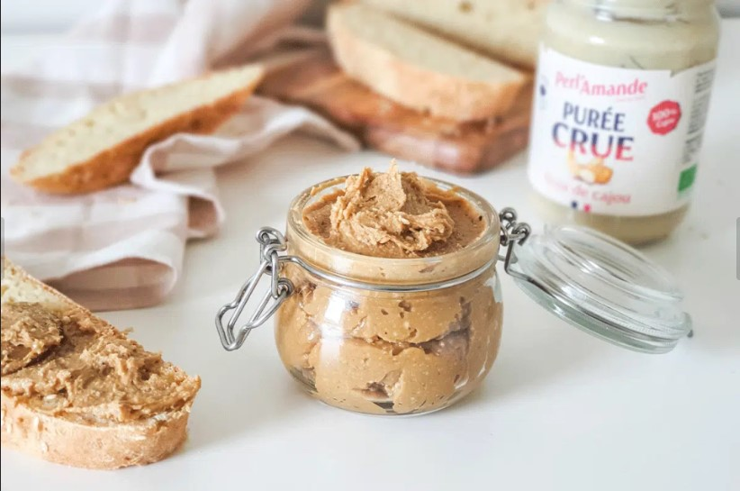
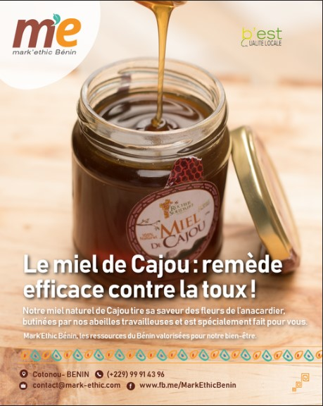
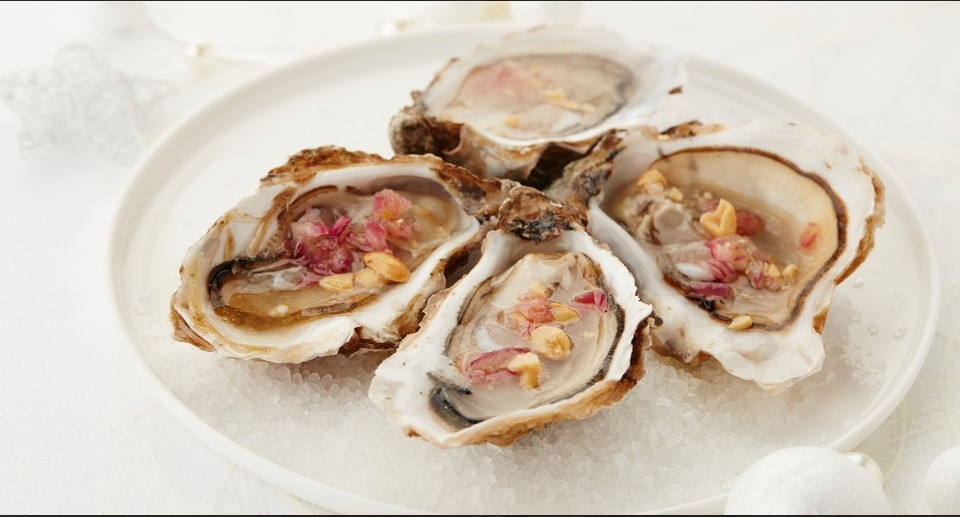

À propos
Pâte Cajoux 12.99€/kg

Pate au cajou qui provient directement des circuits courts Bretillois importés par Jean-Baptiste (haute stature de Cajoux & Cie)
Miel contre la toux Cajoux 5.99€/kg

Le Miel provient directemment de la Miellerie Blusson 32 Tressel 56220 Saint Jacut les Pins qui récolte dans le respect du développement durable et lun de nos partenaires principales.
Huîtres Cajoux 19.99€/kg

Les huîtres sont directemment récoltés par Maxime (Sous-fifre de Cajoux & Cie) sur les côtes Bretonnes dans le respect du développement durable
Contact
Pour toute question ou collaboration, n'hésitez pas à nous contacter.
 Email: cajoux@tartiner.org
Email: cajoux@tartiner.org Téléphone: 01 23 45 67 89
Téléphone: 01 23 45 67 89
 Faire un Don
Faire un Don
Votre soutien est essentiel pour nous permettre de poursuivre notre mission. Faites un don aujourd'hui pour aider à promouvoir notre pates à tatartiner.
Faire un Don